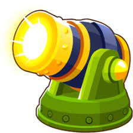
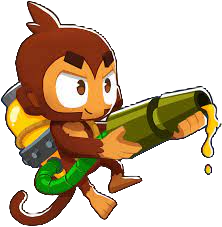

Macaco dardo
O macaco dardo é a primeira torre que você recebe quando inicia o jogo pela primeira vez, ele, assim como os demais, possuí três caminhos a se seguir.
| Caminhos | Vantagens |
|---|---|
| O caminho de cima do macaco dardo faz com que ele ganhe uma jamanta que é ótima contra bloons de chumbo e de cerâmica, mas tem um ataque reduzido. | |
| O caminho do meio do macaco dardo faz ele ganhar mais três dardos e a habilidade ativável de trasformar outros macacos dardo ao redor em super macacos, por um tempo limitado. | |
| O caminho de baixo do macaco dardo faz com que ele tenha uma besta que dispara super rápido, perfura vários bloons e tem a possibilidade de causar dano crítico. |
Macaco bumerangue
O macaco bumerangue é um macaco com a habilidade de arremeçar bumerangues que, após estourar os bloons, retornam para ele.
| Caminhos | Vantagens |
|---|---|
| O caminho de cima do macaco bumerangue é excelente para lidar com uma grande quantidade de bloons, os bumerangues ricocheteiam e pegam todos que ele tenha visão. | |
| O caminho do meio do macaco bumerangue é bom para quando vem um dos maiores bloons como um MOAB, pois ele possuí uma habilidade ativável que aumenta sua velocidade de ataque e ganha letalidade contra os bloons. | |
| O caminho de baixo do macaco bumerangue é bom para empurrar e fragilizar os MOABs enquanto as outras torres dão dano nele. |
Canhão
O canhão é uma torre relativamente barata que ajuda nas primeiras rodadas, tanto aniquilando MOABs quanto explodindo grandes ondas de bloons.
| Caminhos | Vantagens |
|---|---|
| A melhoria de cima do canhão é ótima para estourar várias camadas de bloons ao mesmo tempo e atordoá-los. | |
| A melhoria do meio do canhão tem a capacidade de aniquilar bloons classe MOAB, causando imenso dano e tendo a habilidade ativa de míssil teleguiado. | |
|  | O caminho de baixo canhão é excelente para rodadas de desespero como a 63, quando vem grandes quantidades de bloons em alta velocidade. |
Cospe tachinha
O cospe tachinha é uma torre que ter a habilidade de atirar tachinhas em várias direções ao redor dela, porém possuí um curto alcance.
| Caminhos | Vantagens |
|---|---|
| O caminho de cima do cospe tachinha causa imenso dano a quem passar por perto e tem a capacidade de estourar bloons de chumbo e congelados. | |
 |
O caminho do meio do cospe tachinha possuí a habilidade ativável de atirar várias lâminas em uma espiral, que acaba depois de um certo tempo. |
| O caminho de baixo do cospe tachinha pussuí uma incrível velocidade de ataque que não deixa nenhum bloon passar. |
Macaco de gelo
O macaco de gelo possuí a habilidade congelar os bloons por um certo período.
| Caminhos | Vantagens |
|---|---|
| O caminho de cima do macaco de gelo possuí a capacidade de congelar, fragilizar e até mesmo criar espinhos de gelo que estouram os bloons. | |
| O caminho do meio do macaco de gelo possuí um anel de gelo ao seu redor que desacelera os bloons e possuí a habilidade ativável de congelar todos os bloons na tela. | |
 |
O caminho de baixo do macaco de gelo possuí um canhão de gelo que congela bloons em uma área maior e tem a capacidade de congelar bloons classe MOAB, causando imenso dano. |

Macaco cola
O macaco cola possuí uma arma de cola que desacelera os bloons.
| Caminhos | Vantagens |
|---|---|
 |
O caminho de cima do macaco cola possuí a habilidade de dissolver os bloons em uma mistura ácida de cola. |
| O caminho do meio do macaco cola consegue colar vários bloons de uma vez e possuí a habilidade ativável de colar todos os bloons na tela, causando fraqueza. | |
| O caminho de baixo do macaco cola possuí uma mistura de super cola que atordoa os bloons por um tempo e pode colar bloons classe MOAB, desacelerando-os. |